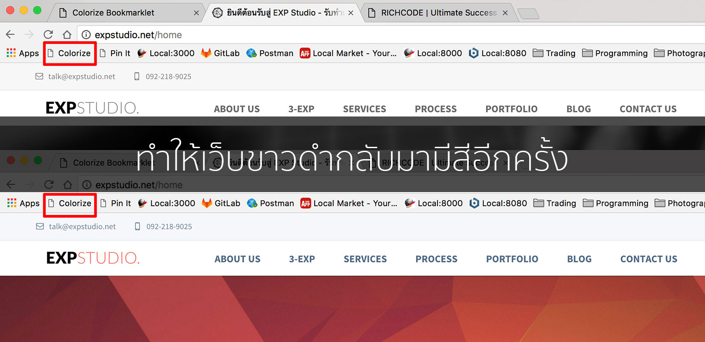

ทำให้เว็บขาวดำมีสีด้วย Colorize Bookmarklet
ทำให้เว็บที่ถูกเปลี่ยนเป็นขาวดำกลับมามีสีอีกครั้ง.
- เปิด Bookmark Bar ด้วยการกดปุ่ม Ctrl + Shift + B พร้อมกัน (บนท Windows หรือ Linux) หรือ Cmd + Shift + B (บน Mac)
- ลากปุ่ม Colorize ด้านล่าง bookmarklet ไปวางที่แถบ bookmark bar บนบราวเซอร์ของคุณ
- เปิดหน้าเว็บไซต์ที่ต้องการเปลี่ยนสี
- กดปุ่ม Colorize บน Bookmark Bar
Colorize
--

https://github.com/expstudio/Colorize